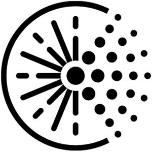

Trade Mark Journal No.2025/027 4 July 2025
WO0000001860292 (3,5)
Office of origin: Germany
Date of International Registration:27 February 2025
Date of designation in the UK:
27 February 2025

International priority date claimed: 11 September 2024
(Germany)
- Class 3
- Cosmetics; body and beauty care products; skin care products; skin creams; skin care lotions, cosmetic; skin care gels, cosmetic; body cleansing and body care preparations; cleansing milk for body and beauty care; eye and nail care products; facial tonics, lotions and serums for cosmetic purposes; balms, except for medical purposes; sunscreens; anti-ageing products; hair preparations and hair treatments; hair lotions; hair conditioners; products for the care and treatment of the scalp, other than for medical purposes; cosmetic preparations for the scalp, namely scalp serum and scalp care foam; mouth rinses, not for medical purposes; skin care products with plant extracts; phytocosmetic products; herbal extracts for cosmetic purposes; essential essences and oils; herbal flavourings [essential oils]; oils for body and beauty care; oils for cosmetic purposes; soaps and gels.
- Class 5
- Pharmaceutical, medical and veterinary products and preparations; medicinal products for human, veterinary and dental use; pharmaceutical, medical and veterinary preparations for health care; chemical preparations, products and reagents for pharmaceutical, medical and veterinary purposes; biological preparations, products and reagents for pharmaceutical, medical and veterinary purposes; biochemical preparations, products and reagents for pharmaceutical, medical and veterinary purposes; bacteriological preparations, products and reagents for pharmaceutical, medical and veterinary use; ferments for pharmaceutical, medical and veterinary purposes; dental preparations and products; mouth rinses for medical purposes; natural remedies; oils, balms, balsamic agents, ointments, lotions, tinctures and foams for pharmaceutical, medical and veterinary purposes; tonics [pharmaceuticals]; medicinal lotions and hair lotions; phytotherapeutic preparations, plant extracts and herbal extracts for pharmaceutical, medical and veterinary purposes; anti-inflammatory agents; diagnostic agents and materials for medical and veterinary purposes; pharmaceutical preparations for skin care; pharmaceutical preparations for the treatment of skin diseases, precancerous lesions and skin cancer; ointments, creams, lotions, foams and gels for the treatment of skin diseases, precancerous lesions and skin cancer.
Biofrontera Pharma GmbH
Representative: LENZING GERBER STUTE Partnerschaftsgesellschaft von Patentanwälten mbB, Bahnstraße 9, 40212 Düsseldorf, GERMANY